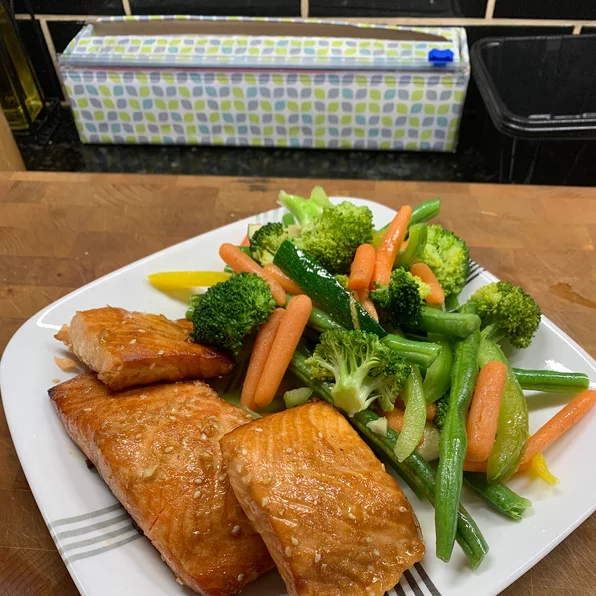

Teriyaki Salmon

Ahhhh, the main course.
Tender flakey, yummy Salmon. My personal favorite kind of fish. This fish has so much flavor on its own but once we are done here it is going to be exploding with flavor with an asian twist and having you coming back for seconds!
Ingredients
- ¼ cup sesame oil
- ¼ cup lemon juice
- ¼ cup soy sauce
- 2 tablespoons brown sugar, or more to taste
- 1 tablespoon sesame seeds
- 1 teaspoon ground mustard
- 1 teaspoon ground ginger
- ¼ teaspoon garlic powder
- 4 (6 ounce) salmon steaks
Directions
- Mix sesame oil, lemon juice, soy sauce, brown sugar, sesame seeds, ground mustard, ginger, and garlic powder in a small saucepan over low heat. Bring to a simmer, stirring until sugar has dissolved. Set aside 1/2 cup of marinade for basting.
- Pour remaining marinade into a resealable plastic bag and place salmon into the marinade. Squeeze air out of the bag, seal, and marinate the salmon steaks for at least 1 hour (2 hours for better flavor). Drain and discard used marinade.
- Set oven rack about 4 inches from the heat source and preheat the oven's broiler. Place salmon steaks into a broiler pan and broil for 5 minutes. Brush steaks with reserved marinade, turn, and broil until fish is opaque and flakes easily, about 5 more minutes. Brush again with marinade.